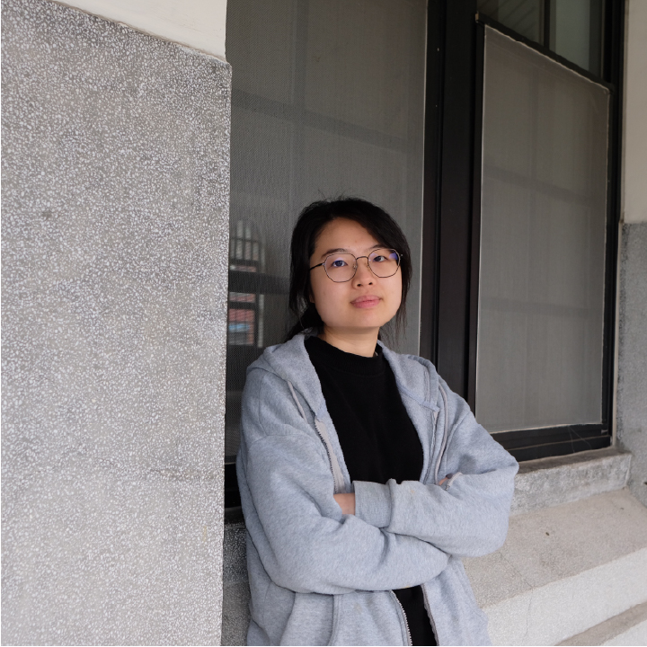

王敏璇 WANG MIN HSUAN
I am passionate about visual design and the art of ceramics — drawn to the way raw clay holds memory, texture, and imperfection. There is something honest about working with your hands in the soil, feeling the resistance of the material as a form slowly emerges.
At the same time, I am equally fascinated by the logic of digital systems — the precision of 3D modeling, the interactivity of game design, and the visual clarity of graphic communication. I see ceramics and digital art not as opposites, but as two languages saying the same thing: that making is a form of thinking.
EDUCATION
國立台北教育大學
藝術與設計學系
設計組
SKILLS
Ceramics: Glaze Chemistry
Design: Illustrator / Photoshop / Procreate / CSP / AutoCAD
3D & Game: Blender / Unity 3D / Premiere Pro / ZBrush